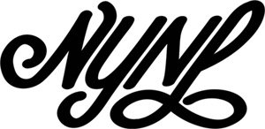

past performance |
|||
|
New York No Limits 2016 Summit showtimes:November 17-19 | Thursday-Saturday |
 | ||
|
The Summit is a film festival event that screens both feature films and short films over a three day period. Some films selected will appear In Competition for the BEST Feature Film and BEST Short Film that carries a cash prize in each category. New York No Limits hosts 4 one night Short Film events throughout the year. The series culminates with the New York No Limits Film Series Summit at the end of each year. NYNL film series seeks to program films that reflect the essence of the filmmaker's vision, daring in nature and imbued with stories that cross the line of commercial intent. Thursday November 17th Friday November 18th Saturday November 19th |
|||
upcoming performances |
|||
 |
|||
| EVQ Film Festival 2018 August 20-25 |
|||
performance archives |
|||
| 2018 | 2017 | 2016 | 2015 |
| 2014 | 2013 | 2012 | 2011 |
| 2010 | 2009 | 2008 | 2007 |